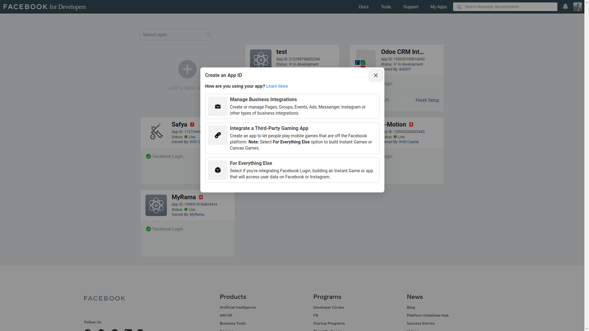
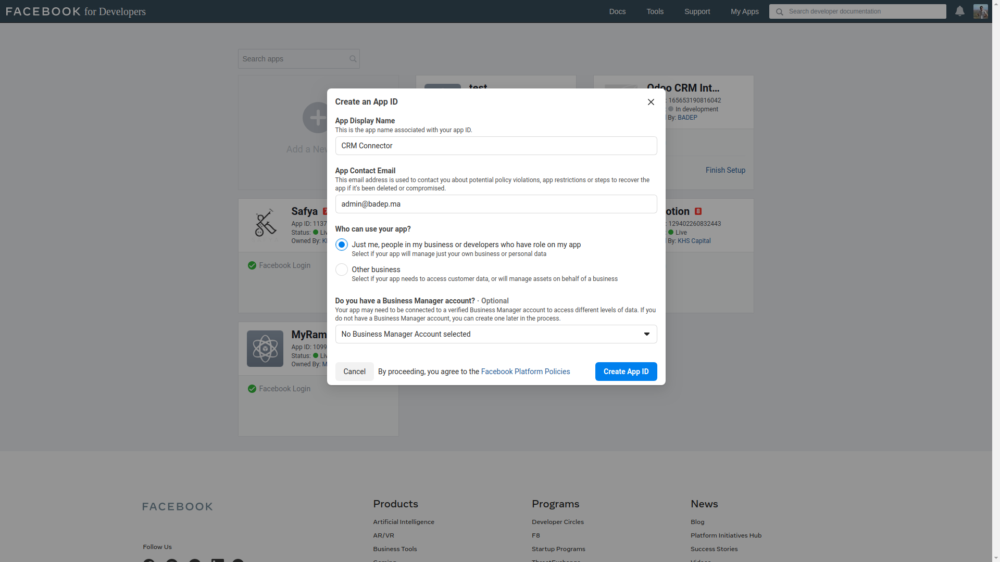
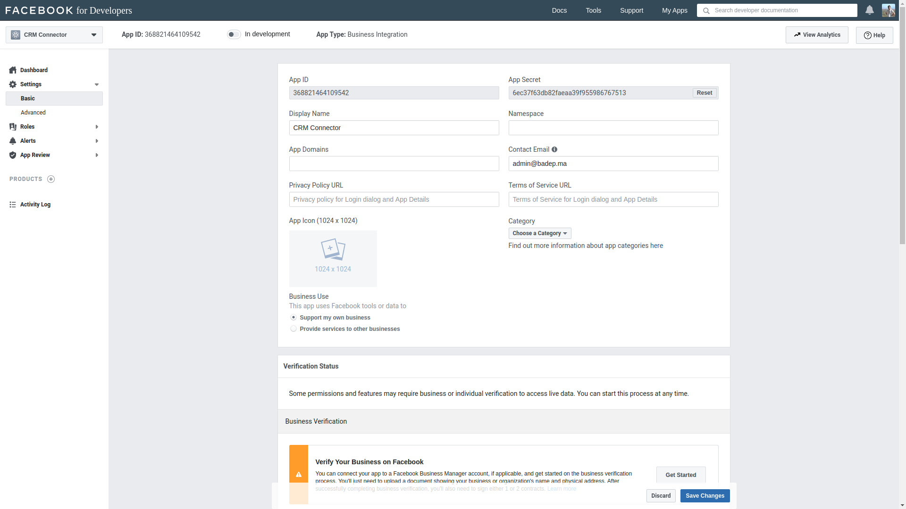
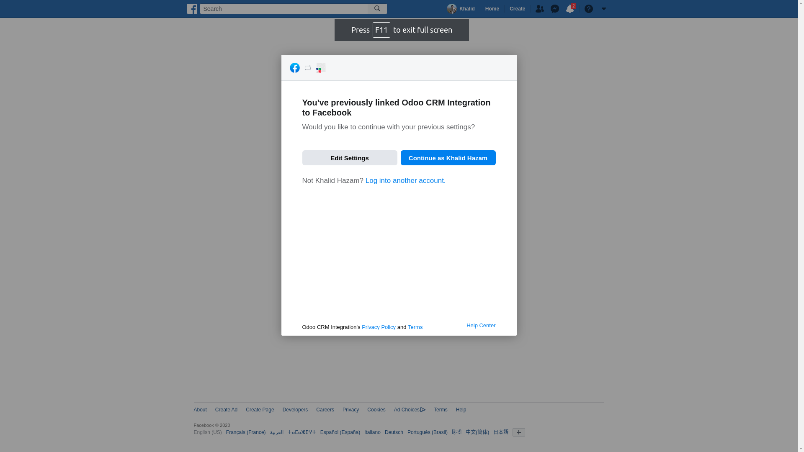
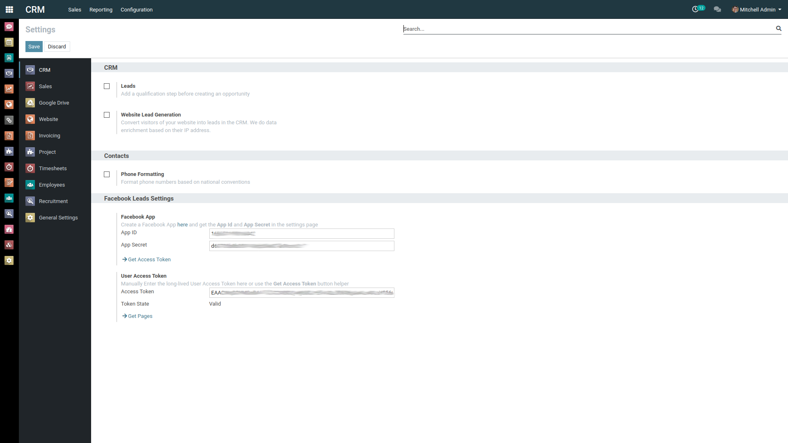

<section class="oe_container">
    <div class="oe_spaced">
        <h2 class="oe_slogan" style="color: #875a7b;">Sync Facebook Leads with Odoo CRM</h2>
        <h3 class="oe_slogan oe_mb32" style="text-align: center;">Support of multiple Pages and multiple Lead Forms with
            advanced field mapping and automatic teams assignation.</h3>
        <h4>Configuration</h4>
        <ol>
            <li>Login to your Facebook account.</li>
            <li>Go to <a href="https://developers.facebook.com/apps">https://developers.facebook.com/apps</a> and
                press <strong>Create App. </strong>Set the Display Name of your
                application and enter the <strong>Contact Email</strong></li>
            <div class="oe_row_img oe_pic_ctr oe_mt32"></div>
            <div class="oe_row_img oe_pic_ctr oe_mt32"></div>
            <li>Go to the <strong>Settings</strong> section
                and choose <em><strong>Basic</strong></em>. From there you can get your <strong>App
                    Id</strong> and <strong>App Secret</strong></li>
            <div class="oe_row_img oe_pic_ctr oe_mt32"></div>
            <li>On Odoo, go to "<strong><strong>CRM/Configuration/Settings</strong></strong>". In Facebook Leads
                Settings paste your <strong>App Id</strong> and <strong>App Secret </strong>and
                click Get Access Token
            </li>
            <li>You will be redirected to facebook to give access to the app. Make sure to include all the pages you
                need to sync
            </li>
            <div class="oe_row_img oe_pic_ctr oe_mt32"></div>
            <li>After granting access you will again be redirected to Odoo with an already generated access token. You
                can then click Get Pages to retrieve all the pages with their respective access token
            </li>
            <div class="oe_row_img oe_pic_ctr oe_mt32"></div>
            <li>Go to "CRM/Configuration/Leads &amp; Opportunities/Facebook Pages" and access the page you want to sync.
                You can use the button "Get Forms" to get all the forms associated with your Facebook page.<br/>
                <div class="oe_row_img oe_pic_ctr oe_mt32">
                </div>
            </li>
            <li>For each form you can edit the mapping between Facebook fields and Odoo fields. Any Facebook field which
                is not mapped will go automatically in the description field of your lead. this way you will get all
                your lead info even if your Facebook form has fields which does not have an equivalent in Odoo. You can
                also assign a Salesteam for each form.<br/>
                <div class="oe_row_img oe_pic_ctr oe_mt32">
                </div>
            </li>
        </ol>
        <h4>Usage</h4>
        <p>The cron job which is configured for an interval of 1 hour will automatically get all the leads which are not
            yet imported in the system.</p>
        <div class="oe_row_img oe_pic_ctr oe_mt32"></div>
        <p>You can also check related Facebook info for each lead.</p>
        <div class="oe_row_img oe_pic_ctr oe_mt32"></div>
        <p>The cron job can also be changed for narrower or bigger intervals.</p>
        <div class="oe_row_img oe_pic_ctr oe_mt32"></div>
        <h4>Roadmap/Known issues</h4>
        <ul>
            <li>There may be some compatibility issues for some field types. For example if the field type is Many2one
                the module will automatically search an adequate record by name, which is not always fault-tolerant.
                Other field types need also to be checked.
            </li>
            <li>The module will always import all the leads which are not in the system. So if you delete a lead it will
                be reimported the next time. the workaround, which is actually the correct thing to do is to archive
                (disable) the leads that you won't be using.
            </li>
            <li>Support other Odoo Models (for example partners or mass mailing contacts).</li>
        </ul>
    </div>
</section>